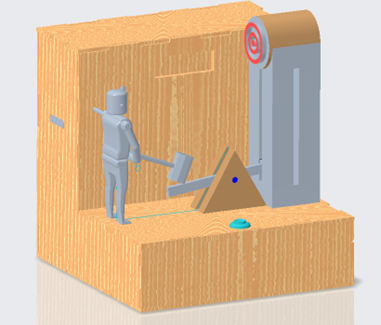
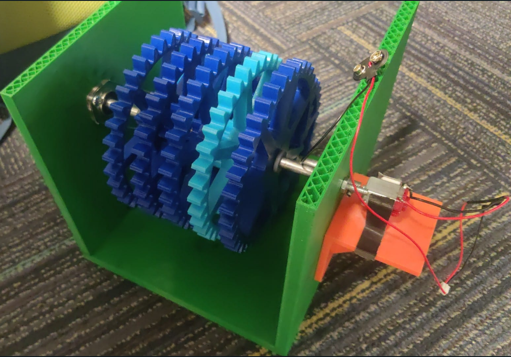
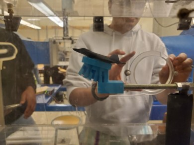
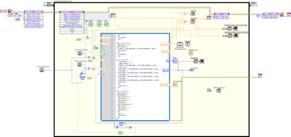
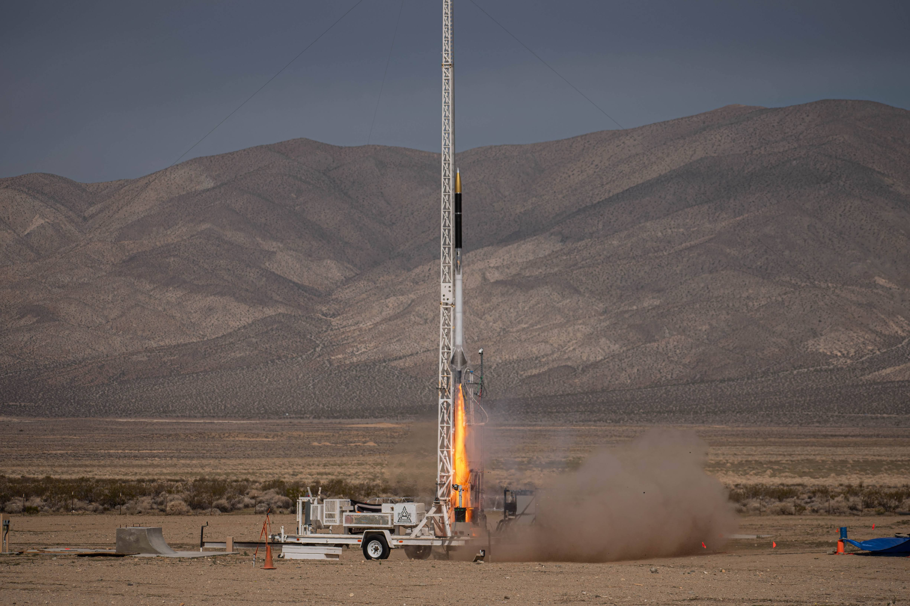

Portfolio
Check out some of my work.

RC Car Project
ME 49601T - Iterative Product Design

Hammer Down!
ME 444 - Toy Design

Wind Turbine Project
ME 35401 - Machine Design Lab

Aircraft Drag Coefficients
ME 30801 - Fluid Mechanics Lab

Autonomous Robot
ME 375 - Measurement & Control Systems II Lab

Boomie Zoomie B
Purdue Space Program - Liquids